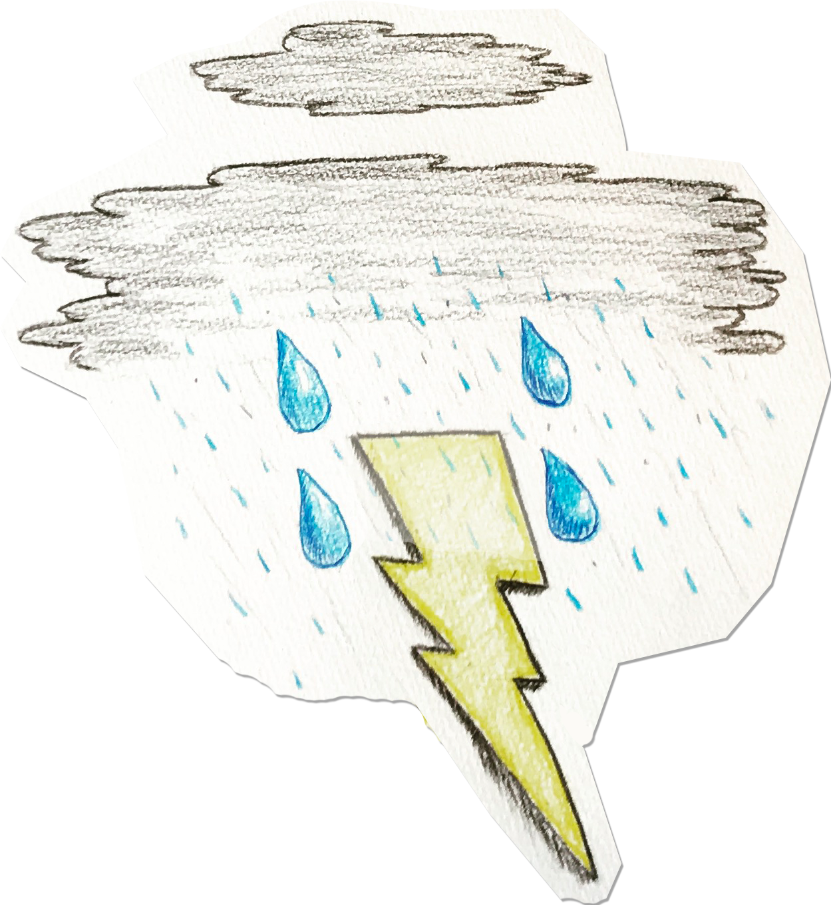

Another reading for 電 outside of general usage is いなずま, which means lightning. This breaks down to いな(稲) "rick stalk" and ずま(妻) "spouse." It was thought that when a bolt touched down from the sky, it would impregnate the rice stalk, which could then bear fruit for the harvest.